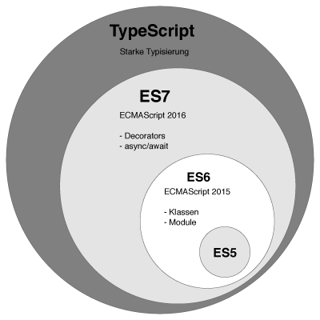

JavaScript History
Introduction
아마도 JavaScript, ECMAScript, TypeScript라는 용어를 많이 들어봤을 텐데 정확하게 어떤 차이가 있는지
이번 포스트에서 간단하게 정리를 해 보겠습니다.
JavaScript
과거부터 Web 작업을 해 오신 분들은 아시겠지만 JavaScript의 과거 인식은 “알면 좋고 몰라도 상관없는 딱 그 수준의 언어”
였습니다. 하지만 개발 방법론이 진화하면서 JavaScript기반의 Library나 Framework의 필요성이 증대되고 그에 따라
JavaScript라는 언어의 위상도 상당히 올라갔습니다. ( HTML5와 Node.js의 역할이 지대했지요. )
JavaScript라는 언어의 전신은 1995년 Netscape사에서 Brendan Eich가 Mocha라는 이름으로 만들어낸 스크립트
언어입니다. 개발을 완료하고 후에 LiveScript라는 이름으로 세상에 공개되었습니다. 그런데 이 시점에 Netscape사가 Java를
개발한 Sun Microsystems사와 협업하면서 Java applet이 큰 인기를 끌게 되었는데 이를 상업적으로 이용하고자
이름을 LiveScript에서 JavaScript로 변경하게 된 것입니다.
이름의 변경 순서가
MochaLiveScriptJavaScript가 되는군요.
MS(Microsoft)에서는 이에 대응하기 위해 JScript를 만들고 IE 3부터 JScript를 포함시켜서 제공했지요. 당연한 말이지만
JavaScript와 JScript는 서로 비슷하지만 특징이 다릅니다. 그로인해 우리가 잘 알고있는 JavaScript의 고질적인 문제인
Fragmentation(파편화 현상)이 발생하게 됩니다.
ECMAScript
여하간 Netscape사는 이 JavaScript의 표준을 잡기 위해 ECMA(정보 통신기술 표준화 기구)에 표준화 작업을 요청합니다. 당연히
JavaScript라는 이름을 사용하려고 했지만 Sun과의 라이선스 문제 때문에 ECMAScript라는 이름으로 표준화가 진행되게 됩니다.
이렇게만 놓고 보면 JavaScript와 ECMAScript가 비슷한 의미로 사용되는 것처럼 보이는데 사실 작은 차이가 있습니다.
우리가 흔희 말하는 JavaScript는 1개의 Core와 2개의 Module로 구성되어 있습니다.
여기서 1개의 Core는 JavaScript를 구성하고 있는 Script language(ECMAScript)입니다.
2개의 Module은 BOM(Browser Object Model), DOM(Document Object Model)을 지칭합니다.
달리 말하자면 ECMAScript는 JavaScript를 구성하는 Core Script언어로 웹 환경에서만 사용되는 언어가 아닙니다. 웹 환경은 ECMAScript가 사용되는 환경 중 하나일 뿐입니다.
JavaScript=ECMAScript+BOM+DOM
현재 ECMAScript version은 7까지 나와있습니다. (ECMAScript 2016 = ES7)
이렇듯 JavaScript와 ECMAScript는 정확한 의미의 차이는 분명히 있지만 그냥 저냥 대충 통용해서 사용합니다. 흔히 우리가
JavaScript라고 표현하면 ECMAScript를 의미한다고 보시면 됩니다.
TypeScript
그러면 TypeScript는 또 어떤걸까요? 왜 TypeScript가 대세로 떠오른 걸까요?
TypeScript는 Microsoft에서 개발하여 2012년에 발표한 오픈 소스 프로그래밍 언어입니다.
JavaScript로 대규모 application개발을 하기 위해 개발되었고 컴파일 과정을 거치면 JavaScript가 되는 언어입니다.
CoffeeScript 처럼 compile하면 JavaScript가 생성되는 변환 언어의 한 종류라 볼 수 있습니다.
그냥 JavaScript로 개발하면 되지 굳이 이런 변환언어를 사용하는 이유는 무엇일까요? ( 이런 프로그래밍을
메타프로그래밍 이라고 합니다. )
가장 큰 이유는 기능의 추가에 있습니다.
변환언어의 가장 큰 장점은 변환되는 언어에 기능을 쉽게 추가할 수 있다는 것인데 예를 들면, 추상 클래스, 인터페이스, 정적 데이터타입 사용, 엄격한 타입 체크등을 JavaScript에 추가하여 개발을 쉽게 끌고 갈 수 있습니다.
즉, 전통적인 OOP방식으로 JavaScript개발을 진행할 수 있다는 것이죠.
기존 객체지향 언어(Java, C++, C#)를 알고 있고 JavaScript를 알고 있으면 TypeScript를 아주 쉽게 배울 수 있습니다.
TypeScript는 다른 변환언어와는 다르게 JavaScript의 superset입니다. 그렇기 때문에 이미 JavaScript를 알고 있으면
쉽게 TypeScript를 사용할 수 있으며 ES6(ECMAScript 2015)나 ES7(ECMAScript 2016)에서 제공되는 기능 중 필요한 것만
골라서 이용할 수 있습니다.
아래의 그림은 TypeScript와 ECMAScript간의 포함관계를 보여줍니다.

2017년 3월부로 TypeScript는 Google의 공식언어 중 하나로 채택되었습니다. MS에서 개발한 언어를 Google이 표준언어로 채택하다니 놀랍습니다. 그만큼 TypeScript의 언어적 기능이 좋고 앞으로의 발전가능성이 많다는 의미겠지요.
기존 Google의 사내 표준언어 (Canonical Language)는 C, C++, Java, JavaScript, Python, Go 정도였는데
Google은 이 중 JavaScript를 이용하여 AngularJS(1.x)를 개발했었습니다.
하지만 AngualrJS(1.x)의 차기버전인 Angular(2.x)를 개발하면서 JavaScript의 기능상의 한계를 느끼게 되고
결국 2014년에 Google에서 발표한 AtScript를 이용해 Angular(2.x)를 개발하게 됩니다.
하지만 TypeScript가 Angular의 표준언어 중 하나로 채택이 되면서 기존의 AtScript로 작성했던 Angular 2를 몽땅 TypeScript로 전환했습니다. Google에서 말하기로는 변환이 아주 쉬웠다고 하더군요.
이렇게 TypeScript의 위상이 올라가면서 기존 Google에서 JavaScript의 대체 언어로 밀고있었던
Dart의 위상 역시 살짝 하락한 상태입니다. (물론 Google은 아니라고 하지만요. )
Angular는 공식적으로 3개의 언어를 지원합니다. (TypeScript, JavaScript, Dart)
그런데 공식문서에서나 커뮤니티활동에서 가장 많이 사용되는것은TypeScript입니다. 결국 Angular는 꼭 해야할 것 중 하나이니 TypeScript도 그냥 해야지요..머..
End.